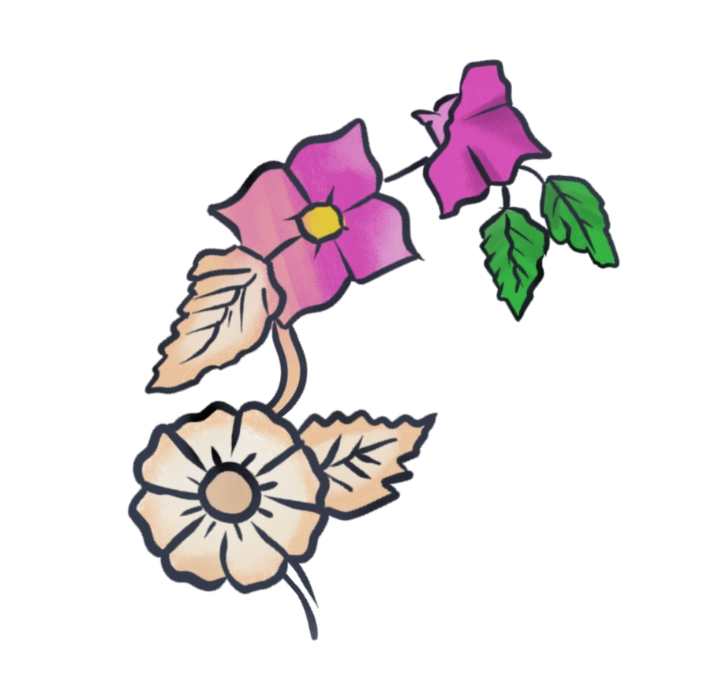
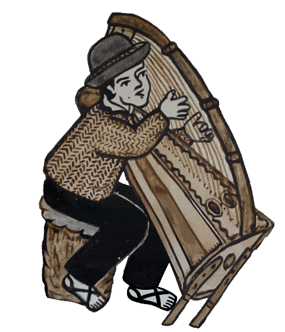
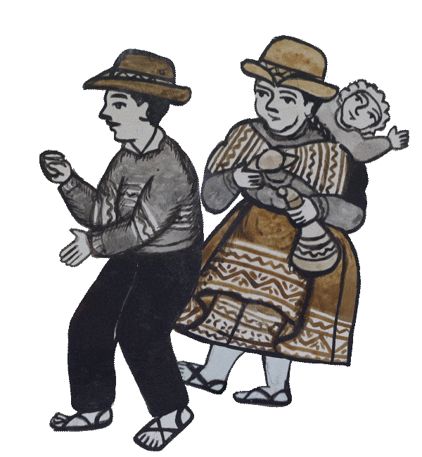
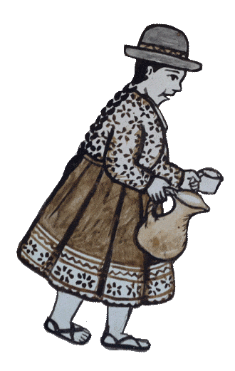
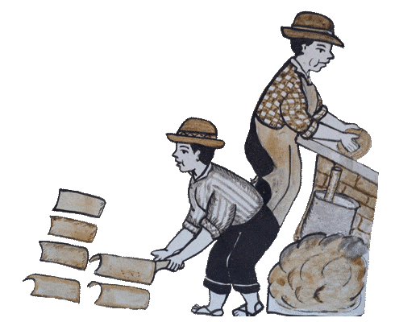
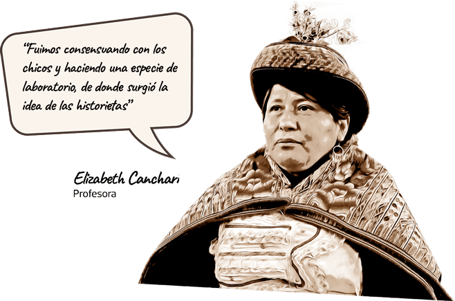
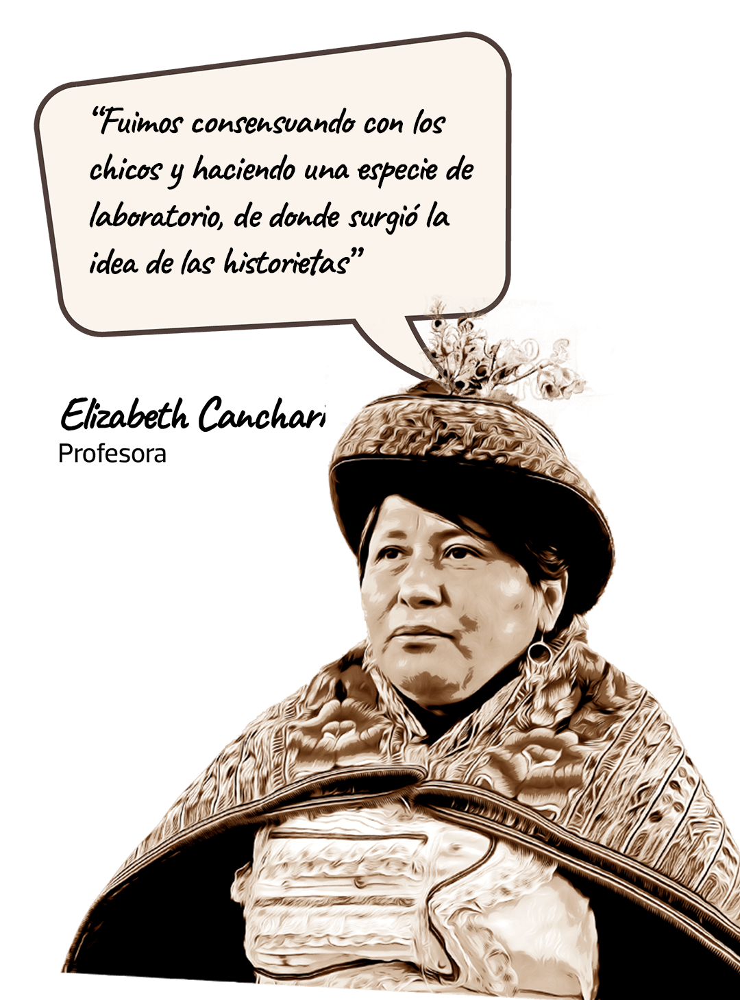

Estas pinturas nos invitan a respetar y valorar la memoria de nuestros pueblos. En un mundo que avanza rápidamente, preservar esta tradición es honrar nuestras raíces y asegurar que su legado perdure para las generaciones venideras.
¿Qué es una tabla de Sarhua y por qué es valiosa?
En sus orígenes, las tablas sarhuinas eran un obsequio que se entregaba a las familias cuando terminaban el techado de su casa. En esa madera, de dos metros de largo, impregnaban su arte pintando las labores que realizaba cada miembro del hogar con el fin de reconocerse y celebrar.
Esta expresión plástica, que conserva la memoria colectiva y ha tejido la vida social de muchas generaciones en Sarhua (Ayacucho), fue reconocida como Patrimonio Cultural de la Nación en 2018 por el Ministerio de Cultura. Hoy, esa tradición sigue viva, pero adaptada a los nuevos tiempos y a las nuevas voces.
   ¿Cómo se lee una tabla de Sarhua?
Su lectura sigue una narrativa vertical que inicia desde la parte inferior hacia la parte superior. Además, cuenta con una estructura específica que los alumnos de la institución educativa Nuestra Señora de Asunción, en la provincia de Víctor Fajardo, nos explican con estos videos:


El viaje de Elizabeth para transformar la educación
Desde temprana edad, Elizabeth Canchari Felices se vio forzada a dejar su tierra natal y migrar hacia Lima debido a la violencia terrorista. En la capital completó sus estudios básicos e inició su carrera en la docencia y aunque tuvo buenas oportunidades para desarrollarse, Elizabeth siempre sintió que algo le faltaba. Así fue como en 2008 decidió regresar a Sarhua “al escuchar el llamado de sus raíces”.
Desde entonces, se ha dedicado a transformar la educación en la región, buscando formas de innovar e integrar los saberes ancestrales en la currícula escolar de la institución educativa Nuestra Señora de Asunción para que los niños no solo aprendan, sino que también se sientan orgullosos de su identidad cultural.
Para la profesora Elizabeth, cada niño que crece con un fuerte sentido de pertenencia y conocimiento de su herencia cultural tiene mayores oportunidades de prosperar. A través de su trabajo, busca ofrecer a los jóvenes una educación que entrelace lo académico con la cultura local, y permitiendo que las nuevas generaciones honre sus tradiciones con una mirada hacia el futuro.
Héroes locales en tablas: La inspiración detrás de ‘Mis historias’
Motivados por el deseo de preservar la tradición de las tablas de Sarhua y al mismo tiempo dar voz a las nuevas generaciones, el proyecto surgió tras una convocatoria de la Fundación Telefónica en colaboración con el Museo de Arte de Lima (MALI).
Junto a 52 estudiantes de segundo y tercero de secundaria, Elizabeth impulsó el plan “Yachayninchikmanta, yachanapaq”, una expresión quechua que significa “Aprendiendo de nuestros sabios”. El objetivo es rendir homenaje a los héroes locales, a través de historietas trabajadas bajo la técnica de las Tablas de Sarhua.
La profesora contó que durante las conversaciones con los estudiantes, se dio inicio a un diálogo profundo sobre la identidad de los pueblos andinos desde la mirada de los escolares, lo que llevó a cuestionarse cómo se veían a sí mismos y qué historias querían contar. Fue entonces cuando vieron la oportunidad de participar en esta convocatoria, donde la propuesta artística y cultural podía reflejar sus vivencias, preocupaciones y sueños.
 ¿Cómo los alumnos hicieron una tabla de Sarhua con mangué?
Conectando la escuela con la comunidad
Con esta nueva perspectiva se busca conectar el aprendizaje con la realidad cultural de los estudiantes. "Queremos que la educación que brindamos esté vinculada a las raíces y los saberes que los niños ya traen de sus hogares", afirma Elizabeth, quien lidera un enfoque pedagógico que reconoce el valor de las tradiciones, oficios y valores ancestrales de la región.
"Lo principal es fortalecer las competencias comunicativas de los niños, que se expresen, lean, y sobre todo, que se nutran de su cultura para desarrollar sus talentos y construir su propio futuro", agrega la docente, reafirmando su compromiso de ofrecer una educación que prepare a los niños para la vida sin olvidar de dónde vienen.
¿Qué busca y espera del futuro de esta educación?
Tradicionalmente, las tablas se pintaban utilizando pigmentos naturales obtenidos de la tierra, hojas, flores y frutos. Algunos artesanos aún preservan estas técnicas ancestrales.
Hoy en día los artesanos han innovado creando versiones más pequeñas y adaptándolas a diferentes formatos decorativos para el comercio
En las tablas es común ver representaciones de animales, flores, frutos y paisajes que reflejan la estrecha relación de la comunidad con la naturaleza.
Los estudiantes de Sarhua participan en talleres para aprender a pintar tablas, como parte de un esfuerzo por preservar y transmitir esta tradición a las nuevas generaciones.
Guardián del arte ancestral de Sarhua
El talentoso artesano Alejo Porfirio Ramos Yanamé ha dedicado su vida a preservar y revalorizar la tradición ancestral de las Tablas de Sarhua. A través de su arte, Alejo no solo cuenta las historias de su comunidad, sino que también es un puente entre el pasado y el presente, transmitiendo este valioso legado a las nuevas generaciones.
Las ilustraciones le pertenecen al artesano Alejo Porfirio Ramos Yanamé. Para este especial se desagreagron algunos elementos y se le dio movimiento.